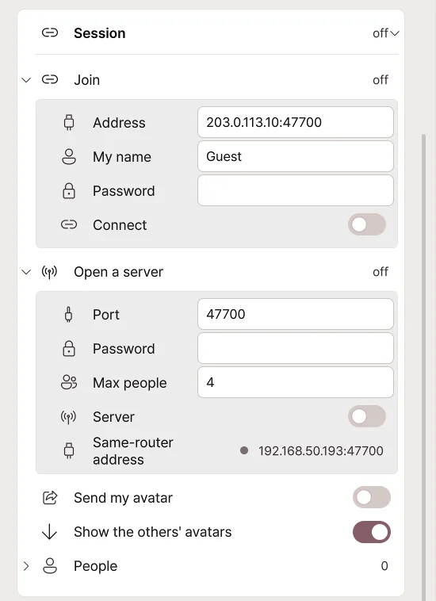
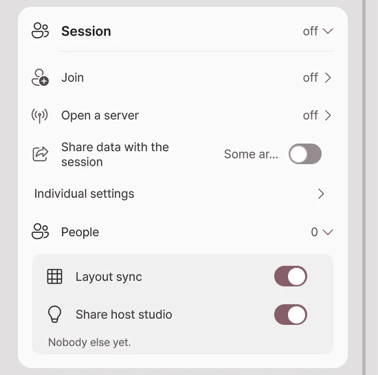

Remote collaboration
Bring avatars moving on different PCs together into a single studio scene. Every participant needs Pro and the same Avatar Live version supporting remote sessions.
Open the session card at the bottom of Broadcast → Connections. One person hosts a room; everyone else joins using the host's address.
Host: open a room

- Expand Open server.
- Set your name, a password and the maximum number of people.
- Enable the Server switch.
- Give participants the connection address and password.
| Setting | What it controls |
|---|---|
| Port | Connection port, 47700 by default. |
| Maximum people | Participant limit, including the host. |
| Password | Password required to join. |
| Server switch | Opens or closes the room; closing it disconnects participants. |
| My address | Host PC's local address. Give friends outside your home the public address and port instead. |
If others cannot join, see Troubleshooting connections.
Participant: join a room
- Expand Join.
- Enter the address:port given by the host.
- Enter your name and the password.
- Enable the Connect switch. The first time you enter, read the entry notice that appears and agree to it once.
- Confirm that participant names appear in the list.
Turn off Connect to leave.
Avatar display and placement

| Setting | What happens when you change it |
|---|---|
| Share data with the session | One switch to exchange avatar data with session participants; off by default. |
| Individual settings | Expand to set Show the others' avatars and Send my avatar separately. |
| Substitute avatar | Selects a local model to show if the original cannot be used. |
| Layout sync | Applies the host's placements plus individual position adjustments. |
| Lock placements | The host restricts participant changes to position, rotation and scale. |
| Position, rotation, scale | Adjusts the selected participant's placement. |
| Find again | Searches your local folders for an identical VRM that you already own. |
A placement you set for another participant may affect only your own view. Use layout sync when several people need a matching arrangement.
Before sending your avatar
The original creators' terms determine whether you may transmit an avatar, clothing or props. Buying Pro or encrypting the data does not give permission to share copyrighted assets. VRM models whose redistribution is prohibited are not transmitted.
If transfer is not permitted, leave Send my avatar data off and select a substitute avatar. See Content usage and ownership.
Troubleshooting connections
First check that the host's server is on, the address, port and password are correct, and everyone uses the same compatible version.
A friend in another home cannot join — port forwarding
On the host's router, forward incoming connections to the host PC.
- Find the host PC's IPv4 address.
- Open the router's Port Forwarding / Port Mapping settings.
- Create the following rule:
| Setting | Value |
|---|---|
| Internal IP | Host PC's IPv4 address |
| External port | 47700 |
| Internal port | 47700 |
| Protocol | Both TCP and UDP |
If you changed the port in Avatar Live, change both port values accordingly. People outside the home connect using the host router's public IP address and port. Private addresses beginning with 192.168 cannot be reached directly from another home.
The address and port are correct but there is no response — firewall
Allow Avatar Live through the host PC's Windows firewall. If manually creating rules, permit inbound TCP and UDP for the session port. You do not need to disable the entire firewall.
If the host PC's internal IP changes, update the router's forwarding target too. A DHCP address reservation can prevent that address from changing.
Port forwarding and the firewall look correct — router or ISP
If the router's WAN address is private or your ISP uses CGNAT, forwarding on your own router may not enable outside connections. Check the upstream router or ask the ISP about public IP availability.
Testing the public address from the same Wi-Fi can fail if the router lacks NAT loopback. Test with a participant on a different network.
Session data notice
- One participant's PC acts as the room server. Avatar Live does not store session avatars on a central service.
- Avatar data transferred with consent uses AES-256-GCM encryption and is temporarily cached on the host and receiving PCs for that session.
- When a participant leaves or the session ends, the app deletes temporary caches and discards decryption keys.
- An encrypted cache alone does not allow reconstruction or export of the original avatar asset.
- Live pose, expression and control messages travel separately from avatar-file transfer and do not have the same end-to-end encryption.
- Encryption of transferred files does not grant redistribution rights for avatars, clothes or props.